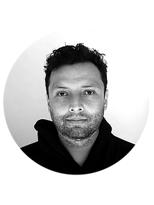

|  | Ruben GaonaProduct designer ruben-gaona.com/ruben-gaona |
Ma Product Designer with more than five years of experience developing user-centered products. I have participated in developing physical and digital products in different stages like ideation, prototyping, user testing, and manufacturing/ product release.
| April 2021- Present | Young Researcher Jorge Tadeo Lozano University Planning and development of the project E-Tadeo. The research team is a cooperation between the departments of robotics, engineering, and product design, and is oriented to the development of mobility concepts. |
Bogotá, Colombia |
| Apr 2016- Jan 2021 | Industrial Designer Easy Rider Pedicabs 2 Projects related to the Design and development of electric tricycles. |
Austin TX. USA(remote) |
| Feb 2019- Jun 2019 | Industrial Designer Büro Staubach Research and Design of railways based vehicles. (Student Job) |
Berlin, Germany |
| Apr 2011- Jun 2018 | Industrial Designer Citytrikes Pedicabs Ideation, research, and development of electric alternative mobility solutions. |
London. UK/ Yong Kang. China |
| Aug 2013- OCT 2014 | Industrial Designer Sunin Industrial Design Studio Research and development of products related to home decoration, toys, and fitness |
Yong Kang.China (remote) |
| 2021-2022 | Meisterschüler:Product Designer Weißensee Kunsthochschule Berlin Study Program offered to outstanding MA graduates |
Berlin. Germany |
| 2017-2019 | Master Degree:Product Designer Weißensee Kunsthochschule Berlin Scholarship Holder DAAD-Colfuturo GPA: 1.0(Germany). Equivalency: 5.0/A+ |
Berlin, Germany |
| Apr 2011- Jun 2018 | Bachelor Degree: Industrial Designer Jorge Tadeo Lozano University . |
Bogotá,Colombia |
| 2021 | Google UX Professional Certificate Google (online) |
| 2021 | Specialization Course:User Experience Research and Design University of Michigan (online) |
| 2021 | Specialization Course:User Interface Design University of Minnesota (online) |
| 2021 | Formulation and management of research projects. Politécnico superior de Colombia (online) |
| 2019 | International Design workshop National Cheng Kung University (Tainan, Taiwan) Innovative Design Award |
| Spanish Native Speaker |
⚫⚫⚫⚫⚫ |
| English Advance |
⚫⚫⚫⚫ |
| German Intermediate |
⚫⚫⚫ |